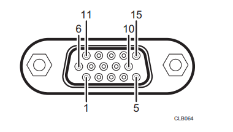
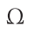

端口规格¶
Computer1 In端口和Computer2 In/Monitor Out端口¶
引脚分配¶
引脚号码 |
RGB输入期间 |
在Y/Pb/Pr输入期间（仅Computer1 In端口） |
|---|---|---|
1 |
视频信号(R) |
色差信号(Pr) |
2 |
视频信号(G) |
亮度信号(Y) |
3 |
视频信号(B) |
色差信号(Pb) |
4 |
N.C |
– |
5 |
GND |
– |
6 |
GND(R) |
GND (Pr) |
7 |
GND(G) |
GND (Y) |
8 |
GND(B) |
GND (Pb) |
9 |
N.C |
– |
10 |
GND |
– |
11 |
N.C |
– |
12 |
I2C数据 |
– |
13 |
水平同步信号 |
– |
14 |
垂直同步信号 |
– |
15 |
I2C时钟 |
– |
输入信号¶
- RGB输入RGB信号：0.7V (p-p)、75 
水平同步信号：TTL电平（正/负极） 垂直同步信号：TTL电平（正/负极）
- Y/Pb/Pr输入（仅Computer1 In端口）
Y信号：1.0V (p-p), 75 Pb/Pr信号：0.7V (p-p), 75